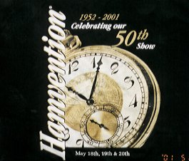

最近、全国的に良く入感しているVU2ZAP・Raj
QSL MgrはW3HNK。このQSLは本人発行のもの

【 Back Issues May.2001】 TIME:UTC(JST-09:00) Report from JA1RJU (PM95sq)
31.May.2001(15:00e) *BY-TV 01:00- 49.750 -- *VK-TV 05:00- 46.172/240 -- KH8/N5OLS 08:28 50.110 CW FW5ZL 08:58 50.110 CW P29BPL 10:20- 50.029 CW Beacon VK4RIK 10:20- 52.455 CW Beacon VR2XMT 10:35 50.110 SSB BV8BC 10:38 50.110/115 SSB VK8VF 13:40- 50.057 CW Beacon 4W6UN 13:45- 50.097 CW Beacon 30.May.2001(15:00g) *BY-TV 00:00- 49.750 -- *VK-TV 05:30- 46.172 -- FO5RA 08:20 50.110 CW *9M-TV 08:30- 48.240/260 -- VK8RAS 08:35- 50.047 CW Beacon 9M2TO/B 08:40- 50.005 CW Beacon V73MJ 09:02 50.110 CW QSL via JF1NZW V73SIX 09:02- 50.014 CW Beacon FW5ZL 09:08 50.111 CW KH8/N5OLS 09:25 50.110 CW JM1MKB/JD1 09:55 50.180 SSB Chichijima P29BPL 12:50- 50.029 CW Beacon 29.May.2001(15:00d) *BY-TV 00:00- 49.750 -- JT1CO 01:50 50.110 CW *VK-TV 03:00- 46.172/240 -- HL5XF 07:17 50.110 CW FW5ZL 08:48 50.110 CW BV2OL 09:07 50.110 CW HL1LTC 09:29 50.110 SSB 28.May.2001(15:00d) *BY-TV 00:00- 49.750 -- *VK-TV 05:30- 46.172/240 -- P29BPL 09:50- 50.029 CW Beacon 27.May.2001(15:00e) *BY-TV 00:00- 49.750 -- VR2XMT 02:00 50.115 SSB *VK-TV 07:30- 46.172/240 -- VK4CH 07:55 50.110 CW P29BPL 08:25- 50.029 CW Beacon 4W6UN 08:25- 50.097 CW Beacon VK4CXQ 08:35 50.110 CW VK4SIX 08:35- 50.095 CW Beacon VK4ZJR 08:58 50.110 SSB HL5PDJ 09:09 50.110 SSB VK4JH 09:25 50.115 SSB (JT1CO 12:40 50.110 CW JR6 Okinawa)
| ◎ マダガスカルから5R8FT・Eddyが5/25-27日の3日間、14:00-16:00zにJA向けにQRVしてくれているが、 Esシーズンのこの時間のパスは本土からは難しい。 4月-5月の連休に5R8DLでQRVしたJH8CLU・野坂慶博さんからの情報によると、 5R8DLの運用後、IC-706と4eleのHB9CVを5R8ET・Solofoに置いてきたので、今回はこのリグを使ってQRVしているのではとのこと。 今回のスケジュールではオペレートの巧い5R8FTが運用しているが、彼のQTHは市街地なので、JAに対するロケーションは5R8ETの方が良いと。 いずれにしても両局とも運用はSSBのみ。秋のDXシーズンのQRVにも期待。尚、野坂さんの5R8DLは5月5日に沖縄と7局QSOしている。 |
26.May.2001(01:00a) *BY-TV 01:00- 49.750 --
| ◎ FEDXP 伊香保ミーティング(26-27.May) |
25.May.2001(15:00d)
*BY-TV 02:00- 49.750 --
*VK-TV 05:00- 46.172 --
*9M-TV 05:00- 48.240/260 --
9M2TO/B 06:15- 50.005 CW Beacon
VK6RSX 07:50- 50.304 CW Beacon
VK8RAS 07:50- 50.047 CW Beacon
24.May.2001(15:00d)
*BY-TV 02:00- 49.750 --
VK6RSX 07:05- 50.304 CW Beacon
VK8VF 09:50- 50.057 CW Beacon
23.May.2001(15:00c)
*VK-TV 08:00- 46.172 --
VK4ZJR 09:05 50.110 SSB
VK4DB 09:07 50.110 SSB
*BY-TV 13:00- 49.750 --
22.May.2001(15:00c)
*9M-TV 05:00- 48.240/260 --
*VK-TV 05:00- 46.172 --
VK4APE 08:55 50.110/170 SSB
VK6RSX 08:55- 50.304 CW Beacon
|
◎ THE 2001 DAYTON HAMVENTION 恒例のデイトン・ハムベンション(Dayton Hamvention)は今年も5月18-20日の3日間、 米国・オハイオ州のデイトンで開催された。 この時期のデイトンは天候が安定せず、今年も初日の18日(金曜日)は朝から雷を伴う大荒れの天候だったが、 この悪天候にも関わらず50回目を迎えたハムベンションの会場は国内・外からの来場者で相変わらずの大盛況だった。
|
16-21.May.2001(00:00a)
5月16日(水)から5月21日(月)までのリポートは休止します。
|
◎ The 2001 Dayton Hamvention(18.19.20.May Ohio U.S.A) 毎年恒例のデイトン・ハムベンション(Dayton Hamvention)が今年も5月18日(現地時間)から20日までの3日間、 米国・オハイオ州のデイトンで開催される。 このデイトンの会場で行われる"DX Forums"には多くの著名なDXerが集うのでも知られている。 サイクルのピークのこの時期は多くのDXpeditionが行われたこともあり盛況が予想される。 土曜日(19日)に行われるDX Forumsのプログラムは次の通り。
○ The DX Forums are in the main centre -Room 4- this year
8:30 - 12:30 DX forum
Moderator: Steve Bolia, N8BJQ
Speakers:
0830 - 0900 "Passion Fruit, DX Spiders, and Real-Time Logging"
presented by Todd Benson, W9YK, Rick Royston, KF9ZZ and
William Lederer, W8LVN
0900 - 0930 DXCC Q & A, Presentation of Desoto Cup-by Wayne Mills, N7NG
0930 - 1030 "Kingman Reef/Palmyra DX Group presents Kingman Reef 2000"
presented by Garry Shapiro, NI6T and Tom Harrell, N4XP
1030 - 1045 A52GJ activities in 2001 by W0GJ
1045 - 1115 "Not just a DXpedition, more a phenomena!-the D68C story"
presented by Neville Cheadle, G3NUG
1115 - 1145 "YK9A 2001" presented by Carl Luetzelschwab, K9LA and Bob
Eshleman, W4DR
|
15.May.2001(15:00e)
*BY-TV 06:00- 49.750 --
9M6CT 08:45 50.110/115 SSB
| ◎ Agalegaの3B6RFは5/15日05:00zにQRTした。JAにも6mで5/10、11日の両日オープンし多くの局がQSOに成功した。 3B6RFとのQSO結果は"Log serch"で確認出来るが、データベースの記録に"漏れ"や"違い"がかなり認められている。 |
14.May.2001(15:00c)
*VK-TV 03:00- 46.172 --
VK4BRG 03:20- 50.077 CW Beacon
VK6RSX 07:50- 50.304 CW Beacon
*ZL-TV 09:00- 45.24/25/26--
VK8VF 09:45- 50.057 CW Beacon
P29BPL 09:45- 50.029 CW Beacon
13.May.2001(15:00g)
*9M-TV 05:00- 48.240/260 --
KH2/7M3GOH 05:47 50.110 CW
T88LJ 07:00 50.120 SSB/CW
*VK-TV 07:00- 46.172 --
VK6RSX 07:25- 50.304 CW Beacon
FW5ZL 07:35 50.110 SSB/CW
FO5RA 07:47 50.110 SSB
DS1MFC 08:20 50.110/105 SSB
XV3AA 08:29 50.110/130 SSB
KH2/7M3GOH 08:47 50.110 CW
VR2DXA 09:00 50.115 SSB
9M2TO/B 09:23- 50.005 CW Beacon
HL5XF 09:27 50.102 CW
VK8VF 13:45- 50.057 CW Beacon
12.May.2001(17:00e)
*9M-TV 14:00- 48.240/260 --
VQ9IO 14:00 50.104 CW
9M2KE 14:30 50.130 CW
9V1JA 14:30 50.120 CW/SSB
T88LJ 14:30 50.160 CW
VK6RSX 14:45- 50.304 CW Beacon
VK8VF 14:45- 50.057 CW Beacon
VQ9IO 15:47 50.110/115 CW/SSB
VR2LC 16:18 50.100 CW
VR2KW 16:20 50.140 CW
Report from JA6FRI (PL47ea)
11.May.2001(15:00f)
*BY-TV 00:00- 49.750 --
*9M-TV 04:40- 48.240/260 --
KH6HME/B 05:25- 50.061.5 CW Beacon
FO3BM 05:48 50.110 SSB
FW5ZL 08:25 50.110 CW
9M2TO/B 10:30- 50.005 CW Beacon
DS1MFC 13:37 50.110 SSB
VR2XMT 14:08 50.115 SSB
10.May.2001(18:00h)
*BY-TV 00:00- 49.750 --
*9M-TV 07:00- 48.240/260 --
FR1AN 07:26 50.110 CW CQing
9M2TO/B 07:45- 50.005 CW Beacon
FW5ZL 08:24 50.110 CW
VR2ZNC 08:30 50.120 SSB
VK6RSX 10:00- 50.304 CW Beacon
VU2RM 10:40 50.350 CW/SSB
VU2ZAP 10:58 50.351/355 SSB/CW
VR2XMT 11:52 50.115 SSB
4W6UN 11:55- 50.097 CW Beacon
VK8VF 11:55- 50.057 CW Beacon
VR2LC 12:19 50.110 CW
VR2XMT 14:18 50.110 SSB
3B6RF 15:12 50.102 CW worked EU
3B6RF 17:10 50.102 CW CQing
| ◎ 夕方から夜にかけて近場のVR2、VU2が強力に聞えただけで昨夜と違いインド洋方面のコンデションはあまり良くない。 期待された3B6RFも15:12z(00:12JST)頃にヨーロッパとQSOしているのが短時間聞えていたが信号は弱かった。 17:10z頃に再び入感してきたが、JAから6エリアが数局呼んでいた程度。 数分ほどCQを連発していたがアンテナを回してしまったのか間もなく聞こえなくなった。 |
09.May.2001(18:00j)
*VK-TV 00:00- 46.172 -- weak
V73SIX 07:00- 50.014 CW Beacon
*9M-TV 07:00- 48.240/260 --
YB8AA 08:00 50.110 CW
FW5ZL 08:04 50.110/115 CW
ZS1AGF 08:26 50.110 SSB GL=JF96FG loud!
VU2ZAP 08:37 50.110/350 SSB
ZS5DJ 08:48 50.110 CW
9M2TO/B 09:50- 50.005 CW Beacon
VU2RM 11:10 50.351 CW
VR2XMT 12:44 50.110 SSB
9M2TO/B 12:50- 50.005 CW Beacon
VQ9NL 13:58 50.110/106 CW UP1-5 Loud!
9V1JA 14:35 50.103/115 CW
4W6UN 15:20- 50.097 CW Beacon
YC1MH 15:29 50.110 SSB
9V1DJ 15:48 50.110 CW
3B6RF 15:50 50.102 CW UP5-15 Loud!
3B6RF 17:49 50.102 CW CQing still good to 18:20z
9M2TO/B 17:50- 50.005 CW Beacon
|
◎ 8日深夜から6mのQRVが確認されていたAgalegaのDXpedition、3B6RFがJAにもオープンした。 8日(JST=9日)のQRVではヨーロッパや北アフリカとのQSOが主でJAにはオープンしなかったが、 9日(JST=10日)も前日同様16:00z少し前から50.102MHzでQRVしてきた。 この日のJA初QSOはJR6(沖縄)だったが、3B6RFの信号は強力で、JA1エリアなどを中心に本土にもオープンしていた事もあり、 指定された"UP5"以上の周波数はJA'sの"猛パイル"で埋まった。 本土とのコンデションが落ちかけた18:00z前にはパイルアップも納まったが、沖縄･奄美では3B6RFの"CQ"は18:20z頃まで聞えていた。 前日(8日)には3B9(Rodoriguez Is)付近を航行中のG0KZG/MM(GL=MG39MP)が本土で聞えたり、 この日もVQ9NL(Chagos Is)やVU2'sが本土で強力に入感してインド洋方面のコンデションが上昇しているのが感じられた。 昨年秋に予定されていた3B6RFのDXpeditionは政治情勢の変化で今まで伸び伸びになっていたものだが、 JA本土の局にはインド洋方面のコンデションが上昇するこの時期にQRVがづれ込んだのが幸いした。3B6RFの運用は5/16までの予定。 |
08.May.2001(16:00j)
*VK-TV 01:00- 46.172 --
FO3BM 02:22 50.110 CW
FO3BM 04:57 50.110 SSB
KH6SX 05:39 50.110 CW
KH6HME/B 05:40 50.061.5 CW Beacon
*9M-TV 06:00- 48.240/260 --
FW5ZL 07:27 50.110/115 CW/SSB
KH8/N5OLS 07:49 50.110 CW CQing
VU2RM 08:34 50.350 CW
FR1GZ 08:57 50.115 SSB CQing Loud!
FR1GZ 09:50 50.115 SSB still good RS59++
4W6UN 12:00- 50.097 CW Beacon
VK8VF 12:00- 50.057 CW Beacon
V73AT 12:05 50.110 CW
9M2TO/B 12:50- 50.005 CW Beacon Loud！
9V1JA 13:22 50.110 CW
V73SIX 13:38 50.014 CW Beacon
VK8RAS 13:38- 50.047 CW Beacon
VK6RSX 13:38- 50.304 CW Beacon
VK4APE 13:41 50.110/160 SSB
4W6UN 15:00- 50.097 CW Beacon
9M2TO/B 15:48- 50.005 CW Beacon again loud！
| ◎ 国内の強力なEsが発生する季節になった。本土に先駆けて梅雨入りが発表された奄美地方でもFW5ZLを呼ぶ1エリアのパイルが強力に入感。 同じ周波数でRS59+のFR1GZがCQを連発していたが、お互いにパスの無い同士ではQSOは出来ない。 |
07.May.2001(15:00f)
*BY-TV 07:00- 49.750 --
*HS-TV? 07:00- 48.250 --
*9M-TV 09:00- 48.240/260 --
VR2LC 09:51 50.110/100 CW
XV3AA 10:10 50.110/130 SSB
HL1LTC 10:16 50.120 SSB
VR2XMT 10:50 50.120 SSB
VR2XMQ/B 11:23 50.098 CW Beacon？ QSX 110 SSB
BV8BC 11:33 50.110 SSB
VU2ZAP 12:15 50.110/350 SSB/CW Loud!
PY5CC 12:30 50.110 CW Long path
DU1/GM4COK 14:00 50.111 CW
VQ9NL 14:34 50.110 CW
Report from JA1RJU (PM95sq)
06.May.2001(15:00i)
*VK-TV 04:00- 46.172/240 --
*ZL-TV 04:00- 45.24/25/26--
VK6RSX 06:00- 50.304 CW Beacon
VK4RIK 06:00- 52.445 CW Beacon
VK4ABP 06:00- 52.347 CW Beacon
VK8RAS 06:00- 50.047 CW Beacon
VK4BRG 06:00- 50.077 CW Beacon
*9M-TV 06:00- 48.240/260 --
9M2TO/B 07:25- 50.005 CW Beacon
FW5ZL 07:30 50.110/115 CW/SSB
FR1GZ 07:40 50.115 SSB
G0KZG/MM 08:00 50.120 SSB QTH MH20SX=Nr 3B9
G7KES/MM 09:10 50.110/120 SSB OP.Paul
JA5OOH/MM 09:45 50.140 SSB Nr HL
VU2ZAP 11:30 50.350 SSB UP 10
VU2RM 11:52 50.352 CW
VK8VF 12:00- 50.057 CW Beacon
P29BPL 12:00- 50.029 CW Beacon
VK6RSX 12:00- 50.304 CW Beacon
VK4APE 12:04 50.135 SSB
DU1/GM4COK 13:00 50.112 CW
VK4CXQ 13:17 50.110 CW
YC1MH 13:17 50.111 SSB
V73AT 13:38 50.110 CW
YB0CBI 13:41 50.112 SSB
9V1JA 13:44 50.105 CW CQing
9M2/JI1ETU 13:54 50.085 CW
9V1DJ 14:00 50.114 CW
05.May.2001(15:00h)
*VK-TV 01:00- 46.172 --
*BY-TV 01:00- 49.750 --
TX4A/MM 02:45 50.110/130 CW/SSB
VK4KK 02:53 50.110 SSB
VK4ABW 03:37 50.110 SSB
*VK-TV 05:00- 46.240 --
V73SIX 07:00- 50.014 CW Beacon
TX4A/MM 07:20 50.110 CW
*9M-TV 08:00- 48.240/260 --
FW5ZL 08:20 50.115 CW
HL5XF 08:32 50.102 CW
KH2JU 08:45 50.130 SSB
VK4CYB 08:55 50.120 SSB
VK4RIK 09:00- 52.445 CW Beacon
VK4ABP 09:00- 52.347 CW Beacon
DS5ISO 09:14 50.115 CW
VK8VF 13:00- 50.057 CW Beacon
P29BPL 13:00- 50.029 CW Beacon
4W6UN 15:00- 50.097 CW Beacon
04.May.2001(15:00f)
*VK-TV 05:00- 46.172 --
VK6RSX 08:20- 50.304 CW Beacon
(G0KZG/MM 08:40 50.120 SSB QTH Nr 3B9. JA2-)
FR1AN 09:01 50.110 SSB
FW5ZL 09:04 50.110/115 CW
VK4ABW 09:13 50.110 SSB
VK4WDM 09:33 50.110 SSB
P29BPL 12:00- 50.029 CW Beacon
VK4CXQ 13:00 50.110 CW
VR2XMT 13:07 50.110 SSB
03.May.2001(15:00i)
*VK-TV 01:20- 46.172 --
TX4A/MM 05:36 50.110 CW
VK4BLK 05:41 50.110/140 SSB
VK4BRG 06:05- 50.077 CW Beacon
*9M-TV 06:05- 48.240 --
VK6RSX 07:50- 50.304 CW Beacon
VK8RAS 07:50- 50.047 CW Beacon
FK8CA 08:06 50.110 CW
VK4JH 09:10 50.110 CW
VK4ABP 09:15- 52.347 CW Beacon
VK4RIK 09:15- 52.445 CW Beacon
VK8VF 11:50- 50.057 CW Beacon
P29BPL 11:50- 50.029 CW Beacon
4W6UN 11:50- 50.097 CW Beacon
VK4CXQ 12:50 50.110 CW
KH2/JM1LJS 14:20 50.160 SSB
KH2/JA1WPX 14:20 50.130 SSB
02.May.2001(15:00i)
*ZL-TV 02:40- 45.240/250 --
*VK-TV 03:00- 46.172/240 --
*BY-TV 05:00- 49.750 --
TX4A/MM 06:30 50.130 SSB
VK4CYB 06:45 50.125 SSB
VK8RAS 07:00- 50.047 CW Beacon
FK8HA 07:05 50.110/120 SSB
FK1TK 07:08 50.110/140 SSB
VK4KK 07:11 50.110 CW
VK4BRG 07:15- 50.077 CW Beacon
VK4WDM 07:17 50.110 SSB CQ EU
VK6RSX 08:10- 50.304 CW Beacon
VK4ABP 08:10- 52.347 CW Beacon
*9M-TV 08:10- 48.240/260 --
9M2TO/B 08:15- 50.005 CW Beacon
VK4JH 08:49 50.110 CW
VK4CXQ 09:18 50.110 CW
FW5ZL 11:50 50.115 SSB
V63YV 11:50 50.135 SSB
KH2/JM1LJS 12:00 50.160 SSB
VK4FNQ 12:12 50.110 SSB
P29ZTC 12:14 50.110/120 SSB
P29BPL 12:15- 50.029 CW Beacon
VK8VF 12:15- 50.057 CW Beacon
VK4CYB 12:50 50.125 SSB QSL JE1LET
XV3AA 13:25 50.110/130 SSB
VK4CXQ 13:35 50.110 CW
VK4CP 13:37 50.110 CW
YC0QO 13:44 50.110/115 SSB
01.May.2001(15:00h)
*VK-TV 02:30- 46.172 --
*BY-TV 03:30- 49.750 --
VR2XMT 03:47 50.110 SSB
*9M-TV 06:00- 48.240/260 --
9M2TO/B 06:10- 50.005 CW Beacon
VR2LC 06:15 50.110 CW
3D2ER 06:55 50.110 CW
*ZL-TV 07:00- 45.250 --
VK4FNQ 07:01 50.110 CW
VK6RSX 07:10- 50.304 CW Beacon
3D2AG 07:55 50.110 SSB
FK1TK 08:15 50.110/120 SSB
FK8CA 08:35 50.110 CW
VK4KK 08:38 50.110 CW
VK4BIT 08:43 50.110 SSB
VK4CXQ 09:09 50.110/150 SSB
VK6RSX 12:50- 50.304 CW Beacon
VK8VF 12:50- 50.057 CW Beacon
P29BPL 12:50- 50.029 CW Beacon
VK4BRG 12:50- 50.077 CW Beacon
VK4RIK 12:50- 52.445 CW Beacon
V63YV 13:00 50.125 SSB QSL JA1WPX
V73SIX 13:00- 50.014 CW Beacon
V73AT 13:22 50.110 CW
VK4CXQ 13:43 50.110 CW CQ EU
VK4WDM 14:11 50.110 SSB CQ LP
|
◎ VK4CP・Adamからの情報によると、4月20-24日にMellish ReefからQRVしたVK9MLは、 期間中96時間の運用で4K.BV.DU.FK8.HL.HP.JA.KH6.KH8.KL7.P4.TI.V73.W6.VK.YC.YS.ZLの18 DXCC entitiesとQSOしたと。
 1989年1月にMellish Reefから6mを運用したVK9ZM このPediには日本からJR1RCQ・古坂さんが参加した |